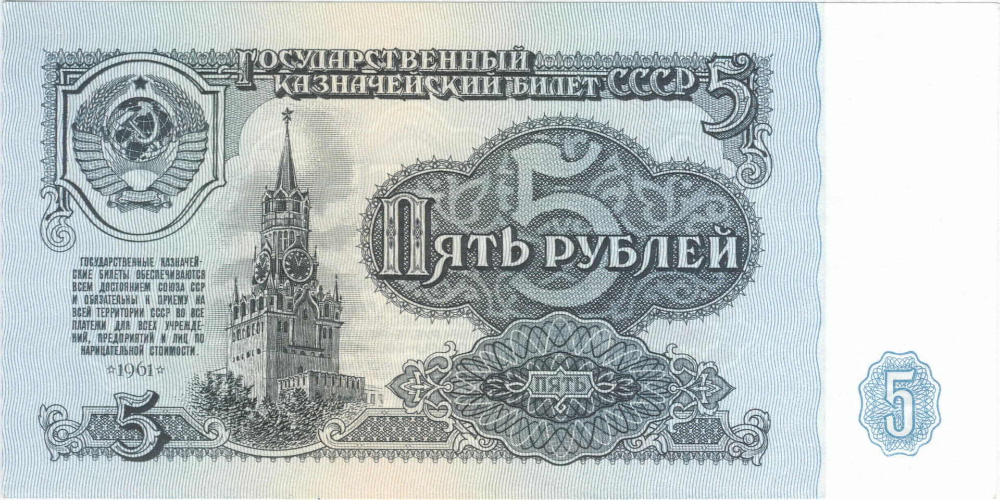

Рубль
Рубль — валюта СССР с 1923 года по 26 декабря 1991 года, а после этой даты — валюта некоторых государств, возникших после распада Советского Союза (в частности, в Таджикистане до 8 января 1994 года). До 1947 года имел параллельное хождение с червонцем. Дизайн большинства советских банкнот разработал гравёр и художник Иван Иванович Дубасов. В СССР, начиная с ноября 1923 и до февраля 1924, все бумажные денежные знаки назывались Государственными денежными знаками Союза Советских Социалистических Республик. С 1924 года по 1991 год банкноты достоинством до 10 рублей (одного червонца) именовались Государственными казначейскими билетами СССР, от 10 рублей и выше — Билетами Государственного банка СССР. С 1991 года банкноты всех номиналов стали именоваться Билетами Государственного банка СССР. Советский рубль после денежной реформы 1 января 1961 года был формально равен 0,987412 г золота. Золото в СССР можно было приобрести в виде ювелирных изделий, которых в 1985 году было реализовано на сумму в 2,926 миллиарда рублей, выпускались памятные монеты из золота. Государственный банк СССР устанавливал официальный курс рубля по отношению к другим валютам, так, на 25 декабря 1991 года 1 доллар США равнялся 0,5571 рубля, 1 фунт стерлингов — 1,0389 рубля[3]. После распада СССР в 1992—1995 годах советский рубль постепенно выводился из обращения. Последней страной, отказавшейся от советского рубля, стал Таджикистан (8 января 1994). Россия вышла из зоны советского рубля в июле 1993 года.
[ОБРАТНО НА ГЛАВНУЮ]